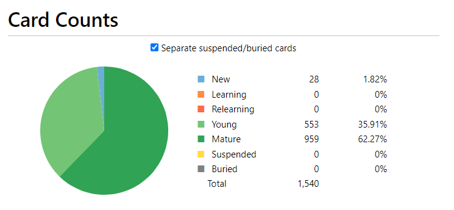
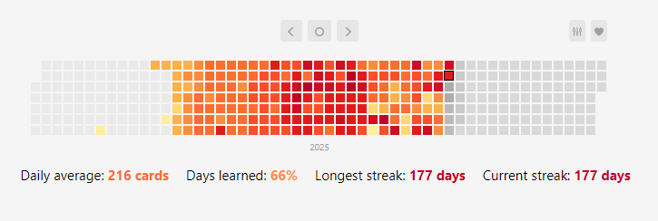

For anyone curious enough to read this, welcome! This is just a small update, mainly meant for myself to look back onto and reference in the future. If you really want to, feel free to have a read. I did make this public, after all.
Looking back on what I've been doing since I started, I really don't understand why I even decided to pursue this route in the first place. It's not like I regret what I've managed to accomplish, but pursing this route proved to be way harder than I could have ever really imagined. I naively thought that somehow, after learning a few words in Japanese, I would be able to have the same amount of comprehension that I would normally have watching something with an audio dub or reading the subtitles. That guy in the past must be an idiot for thinking such silly thoughts, I can't believe I'm even related to him....
Even though it started off as such a simple goal, I decided that I wanted to take my time and still learn the language. Even now, I still feel like I'm not close to where I would like to be, like the amount of time that I would have to sink in to get to a somewhat intermediate level is far from my reach. With that being said, the fruits that I have nurtured since March 24th have slowly started to blossom:
 Total amount of words I've learned after 177 days of consistent study via Anki/Cultural Immersion.
In total, I've managed to learn 1,500 words in the span of around 6 months. Those minimal amount of words have only contributed towards me being able to learn the language at a very elementary level. Having to learn all of the different Kanji used for vocabulary while trying to memorize words is very challenging. It is so easy to just misinterpret a word just because you remembered it wrong and poof, the idea the sentence is trying to convey can make no sense at all. I miss complaining about how the spelling for 'Wednesday' makes absolutely no sense at all when I was in Elementary School instead of looking at these ancient scribbles and wanting to bash my head against the wall for 500 hours.
Surprisingly, I have been very consistent on maintaining this habit since I really started taking my learning seriously. I took a 4-month break when I first started, so please ignore the 66% days learned statistic from the heatmap. If I had never taken that break, I wonder at what level I would be at now. Or rather, would I have even bothered after a while of learning to continue at the pace that I currently have? It doesn't really matter now, so I guess I could just move forward without thinking about it? Maybe?
Anyways, I am still satisfied by the results that I have managed to pull off. It turns out that simply learning a bunch of vocabulary and watching a bunch of anime with the JP subs can actually be a useful tool for learning the language. Of course, there is way more that goes into it than that, but I do understand some of the sentences and lines that get repeated when I understand the words in them. Sometimes. Other times I have to do a word lookup and even then I don't even understand the meaning of the sentence. It has gotten way easier over time though, the first month was so torturous using an immersion-based learning method because it sounded like blah blah blah, konnichiwa, blah, blah . I am so glad that now it sounds like konnichiwa, konnichiwa, blah, desu. Yay, what an improvement!
In all honesty, I am incredibly surprised on how effective this method as actually worked out for me. Imagine telling someone that simply learing a couple thousand of Japanese words and constantly surrounding yourself with the language can be enough for a person to pick up on it. It sounds like it would never work in theory, but in practice it is a very effective tool. From going to understanding absolutely nothing to a level where I can somewhat keep up with what the dialogue being spoken is trying to communicate, I have even surprised myself with the results. I'm terrified of the person that will be one year into the learning process, that guy will probably end up being a monster. I'll probably update with another update when I feel like it, but I don't really have anything more to add. I guess to the me in the future, good luck? You probably don't need me to tell you that, though...